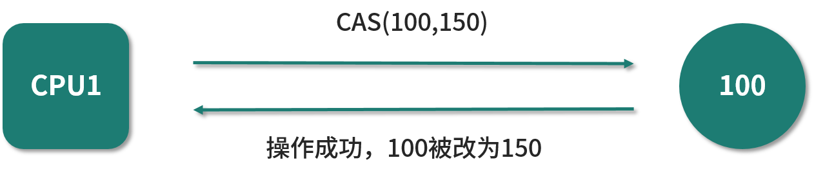
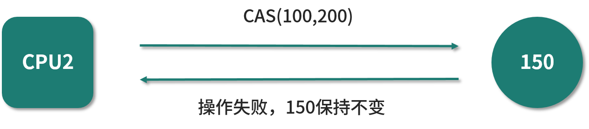
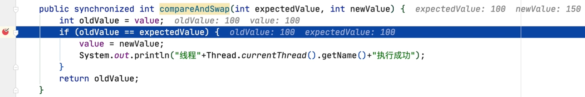
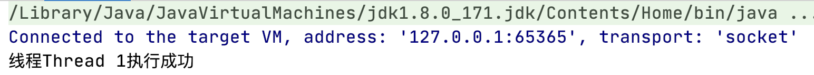

- 00 由点及面，搭建你的 Java 并发知识网.md.html
- 01 为何说只有 1 种实现线程的方法？.md.html
- 02 如何正确停止线程？为什么 volatile 标记位的停止方法是错误的？.md.html
- 03 线程是如何在 6 种状态之间转换的？.md.html
- 04 waitnotifynotifyAll 方法的使用注意事项？.md.html
- 05 有哪几种实现生产者消费者模式的方法？.md.html
- 06 一共有哪 3 类线程安全问题？.md.html
- 07 哪些场景需要额外注意线程安全问题？.md.html
- 08 为什么多线程会带来性能问题？.md.html
- 09 使用线程池比手动创建线程好在哪里？.md.html
- 10 线程池的各个参数的含义？.md.html
- 11 线程池有哪 4 种拒绝策略？.md.html
- 12 有哪 6 种常见的线程池？什么是 Java8 的 ForkJoinPool？.md.html
- 13 线程池常用的阻塞队列有哪些？.md.html
- 14 为什么不应该自动创建线程池？.md.html
- 15 合适的线程数量是多少？CPU 核心数和线程数的关系？.md.html
- 16 如何根据实际需要，定制自己的线程池？.md.html
- 17 如何正确关闭线程池？shutdown 和 shutdownNow 的区别？.md.html
- 18 线程池实现“线程复用”的原理？.md.html
- 19 你知道哪几种锁？分别有什么特点？.md.html
- 20 悲观锁和乐观锁的本质是什么？.md.html
- 21 如何看到 synchronized 背后的“monitor 锁”？.md.html
- 22 synchronized 和 Lock 孰优孰劣，如何选择？.md.html
- 23 Lock 有哪几个常用方法？分别有什么用？.md.html
- 24 讲一讲公平锁和非公平锁，为什么要“非公平”？.md.html
- 25 读写锁 ReadWriteLock 获取锁有哪些规则？.md.html
- 26 读锁应该插队吗？什么是读写锁的升降级？.md.html
- 27 什么是自旋锁？自旋的好处和后果是什么呢？.md.html
- 28 JVM 对锁进行了哪些优化？.md.html
- 29 HashMap 为什么是线程不安全的？.md.html
- 30 ConcurrentHashMap 在 Java7 和 8 有何不同？.md.html
- 31 为什么 Map 桶中超过 8 个才转为红黑树？.md.html
- 32 同样是线程安全，ConcurrentHashMap 和 Hashtable 的区别.md.html
- 33 CopyOnWriteArrayList 有什么特点？.md.html
- 34 什么是阻塞队列？.md.html
- 35 阻塞队列包含哪些常用的方法？add、offer、put 等方法的区别？.md.html
- 36 有哪几种常见的阻塞队列？.md.html
- 37 阻塞和非阻塞队列的并发安全原理是什么？.md.html
- 38 如何选择适合自己的阻塞队列？.md.html
- 39 原子类是如何利用 CAS 保证线程安全的？.md.html
- 40 AtomicInteger 在高并发下性能不好，如何解决？为什么？.md.html
- 41 原子类和 volatile 有什么异同？.md.html
- 42 AtomicInteger 和 synchronized 的异同点？.md.html
- 43 Java 8 中 Adder 和 Accumulator 有什么区别？.md.html
- 44 ThreadLocal 适合用在哪些实际生产的场景中？.md.html
- 45 ThreadLocal 是用来解决共享资源的多线程访问的问题吗？.md.html
- 46 多个 ThreadLocal 在 Thread 中的 threadlocals 里是怎么存储的？.md.html
- 47 内存泄漏——为何每次用完 ThreadLocal 都要调用 remove()？.md.html
- 48 Callable 和 Runnable 的不同？.md.html
- 49 Future 的主要功能是什么？.md.html
- 50 使用 Future 有哪些注意点？Future 产生新的线程了吗？.md.html
- 51 如何利用 CompletableFuture 实现“旅游平台”问题？.md.html
- 52 信号量能被 FixedThreadPool 替代吗？.md.html
- 53 CountDownLatch 是如何安排线程执行顺序的？.md.html
- 54 CyclicBarrier 和 CountdownLatch 有什么异同？.md.html
- 55 Condition、object.wait() 和 notify() 的关系？.md.html
- 56 讲一讲什么是 Java 内存模型？.md.html
- 57 什么是指令重排序？为什么要重排序？.md.html
- 58 Java 中的原子操作有哪些注意事项？.md.html
- 59 什么是“内存可见性”问题？.md.html
- 60 主内存和工作内存的关系？.md.html
- 61 什么是 happens-before 规则？.md.html
- 62 volatile 的作用是什么？与 synchronized 有什么异同？.md.html
- 63 单例模式的双重检查锁模式为什么必须加 volatile？.md.html
- 64 你知道什么是 CAS 吗？.md.html
- 65 CAS 和乐观锁的关系，什么时候会用到 CAS？.md.html
- 66 CAS 有什么缺点？.md.html
- 67 如何写一个必然死锁的例子？.md.html
- 68 发生死锁必须满足哪 4 个条件？.md.html
- 69 如何用命令行和代码定位死锁？.md.html
- 70 有哪些解决死锁问题的策略？.md.html
- 71 讲一讲经典的哲学家就餐问题.md.html
- 72 final 的三种用法是什么？.md.html
- 73 为什么加了 final 却依然无法拥有“不变性”？.md.html
- 74 为什么 String 被设计为是不可变的？.md.html
- 75 为什么需要 AQS？AQS 的作用和重要性是什么？.md.html
- 76 AQS 的内部原理是什么样的？.md.html
- 77 AQS 在 CountDownLatch 等类中的应用原理是什么？.md.html
- 78 一份独家的 Java 并发工具图谱.md.html
- 捐赠
64 你知道什么是 CAS 吗？
本课时，我将讲解 CAS。
CAS 简介
CAS 其实是我们面试中的常客，因为它是原子类的底层原理，同时也是乐观锁的原理，所以当你去面试的时候，经常会遇到这样的问题“你知道哪些类型的锁”？你可能会回答“悲观锁和乐观锁”，那么下一个问题很有可能是问乐观锁的原理，也就是和 CAS 相关的问题，当然也有可能会继续深入问你 CAS 的应用场景或者是缺点等问题。在本课时和接下来的这两个课时里，我将带领你学习如何回答这些问题。
首先我们来看一下 CAS 是什么，它的英文全称是 Compare-And-Swap，中文叫做“比较并交换”，它是一种思想、一种算法。
在多线程的情况下，各个代码的执行顺序是不能确定的，所以为了保证并发安全，我们可以使用互斥锁。而 CAS 的特点是避免使用互斥锁，当多个线程同时使用 CAS 更新同一个变量时，只有其中一个线程能够操作成功，而其他线程都会更新失败。不过和同步互斥锁不同的是，更新失败的线程并不会被阻塞，而是被告知这次由于竞争而导致的操作失败，但还可以再次尝试。
CAS 被广泛应用在并发编程领域中，以实现那些不会被打断的数据交换操作，从而就实现了无锁的线程安全。
CAS 的思路
在大多数处理器的指令中，都会实现 CAS 相关的指令，这一条指令就可以完成“比较并交换”的操作，也正是由于这是一条（而不是多条）CPU 指令，所以 CAS 相关的指令是具备原子性的，这个组合操作在执行期间不会被打断，这样就能保证并发安全。由于这个原子性是由 CPU 保证的，所以无需我们程序员来操心。
CAS 有三个操作数：内存值 V、预期值 A、要修改的值 B。CAS 最核心的思路就是，仅当预期值 A 和当前的内存值 V 相同时，才将内存值修改为 B。
我们对此展开描述一下：CAS 会提前假定当前内存值 V 应该等于值 A，而值 A 往往是之前读取到当时的内存值 V。在执行 CAS 时，如果发现当前的内存值 V 恰好是值 A 的话，那 CAS 就会把内存值 V 改成值 B，而值 B 往往是在拿到值 A 后，在值 A 的基础上经过计算而得到的。如果执行 CAS 时发现此时内存值 V 不等于值 A，则说明在刚才计算 B 的期间内，内存值已经被其他线程修改过了，那么本次 CAS 就不应该再修改了，可以避免多人同时修改导致出错。这就是 CAS 的主要思路和流程。
JDK 正是利用了这些 CAS 指令，可以实现并发的数据结构，比如 AtomicInteger 等原子类。
利用 CAS 实现的无锁算法，就像我们谈判的时候，用一种非常乐观的方式去协商，彼此之间很友好，这次没谈成，还可以重试。CAS 的思路和之前的互斥锁是两种完全不同的思路，如果是互斥锁，不存在协商机制，大家都会尝试抢占资源，如果抢到了，在操作完成前，会把这个资源牢牢的攥在自己的手里。当然，利用 CAS 和利用互斥锁，都可以保证并发安全，它们是实现同一目标的不同手段。
例子
下面我们用图解和例子的方式，让 CAS 的过程变得更加清晰，如下图所示：

假设有两个线程，分别使用两个 CPU，它们都想利用 CAS 来改变右边的变量的值。我们先来看线程 1，它使用 CPU 1，假设它先执行，它期望当前的值是 100，并且想将其改成 150。在执行的时候，它会去检查当前的值是不是 100，发现真的是 100，所以可以改动成功，而当改完之后，右边的值就会从 100 变成 150。 
如上图所示，假设现在才刚刚轮到线程 2 所使用的 CPU 2 来执行，它想要把这个值从 100 改成 200，所以它也希望当前值是 100，可实际上当前值是 150，所以它会发现当前值不是自己期望的值，所以并不会真正的去继续把 100 改成 200，也就是说整个操作都是没有效果的，此次没有修改成功，CAS 操作失败。
当然，接下来线程 2 还可以有其他的操作，这需要根据业务需求来决定，比如重试、报错或者干脆跳过执行。举一个例子，在秒杀场景下，多个线程同时执行秒杀，只要有一个执行成功就够了，剩下的线程当发现自己 CAS 失败了，其实说明兄弟线程执行成功了，也就没有必要继续执行了，这就是跳过操作。所以业务逻辑不同，就会有不同的处理方法，但无论后续怎么处理，之前的那一次 CAS 操作是已经失败了的。
CAS 的语义
我们来看一看 CAS 的语义，有了下面的等价代码之后，理解起来会比前面的图示和文字更加容易，因为代码实际上是一目了然的。接下来我们把 CAS 拆开，看看它内部究竟做了哪些事情。CAS 的等价语义的代码，如下所示：
/**
* 描述： 模拟CAS操作，等价代码
*/
public class SimulatedCAS {
private int value;
public synchronized int compareAndSwap(int expectedValue, int newValue) {
int oldValue = value;
if (oldValue == expectedValue) {
value = newValue;
}
return oldValue;
}
}
在这段代码中有一个 compareAndSwap 方法，在这个方法里有两个入参，第 1 个入参期望值 expectedValue，第 2 个入参是 newValue，它就是我们计算好的新的值，我们希望把这个新的值去更新到变量上去。
你一定注意到了， compareAndSwap 方法是被 synchronized 修饰的，我们用同步方法为 CAS 的等价代码保证了原子性。
接下来我将讲解，在 compareAndSwap 方法里都做了哪些事情。需要先拿到变量的当前值，所以代码里用就会用 int oldValue = value 把变量的当前值拿到。然后就是 compare，也就是“比较”，所以此时会用 if (oldValue == expectedValue) 把当前值和期望值进行比较，如果它们是相等的话，那就意味着现在的值正好就是我们所期望的值，满足条件，说明此时可以进行 swap，也就是交换，所以就把 value 的值修改成 newValue，最后再返回 oldValue，完成了整个 CAS 过程。
CAS 最核心的思想就在上面这个流程中体现了，可以看出，compare 指的就是 if 里的比较，比较 oldValue 是否等于 expectedValue；同样，swap 实际上就是把 value 改成 newValue，并且返回 oldValue。所以这整个 compareAndSwap 方法就还原了 CAS 的语义，也象征了 CAS 指令在背后所做的工作。
案例演示：两个线程竞争 CAS，其中一个落败
有了这前面的等价代码之后，我们再来深入介绍一个具体的案例：两个线来执行 CAS，尝试修改数据，第一个线程能修改成功，而第二个线程由于来晚了，会发现数据已经被修改过了，就不再修改了。我们通过 debug 的方式可以看到 CAS 在执行过程中的具体情况。
下面我们用代码来演示一下 CAS 在两个线程竞争的时候，会发生的情况，同时我也录制了一段视频，你也可以直接跳过文字版看视频演示。
我们看下面的这段代码：
public class DebugCAS implements Runnable {
private volatile int value;
public synchronized int compareAndSwap(int expectedValue, int newValue) {
int oldValue = value;
if (oldValue == expectedValue) {
value = newValue;
System.out.println("线程"+Thread.currentThread().getName()+"执行成功");
}
return oldValue;
}
public static void main(String[] args) throws InterruptedException {
DebugCAS r = new DebugCAS();
r.value = 100;
Thread t1 = new Thread(r,"Thread 1");
Thread t2 = new Thread(r,"Thread 2");
t1.start();
t2.start();
t1.join();
t2.join();
System.out.println(r.value);
}
@Override
public void run() {
compareAndSwap(100, 150);
}
}
这里的 compareAndSwap 方法就是刚才所讲过的 CAS 的等价语义的代码，然后我们在此基础上加了一行代码，如果执行成功的话，它会打印出是哪个线程执行成功。
而在我们的 main() 方法里面，首先把 DebugCAS 类实例化出来，并把 value 的值修改为 100，这样它的初始值就为 100，接着我们新建两个线程 Thread t1 和 Thread t2，把它们启动起来，并且主线程等待两个线程执行完毕之后，去打印出最后 value 的值。
新建的这两个线程都做了什么内容呢？在 run() 方法里面可以看到，就是执行 compareAndSwap 方法，并且期望的值是 100，希望改成的值是 150，那么当两个线程都去执行 run() 方法的时候，可以预见到的是，只会有一个线程执行成功，另外一个线程不会打印出“执行成功”这句话，因为当它执行的时候会发现，当时的值已经被修改过了，不是 100 了。
首先，我们不打断点，直接执行看看运行的结果：
线程Thread 1执行成功
150
可以看到，Thread 1 执行成功，且最终的结果是 150。在这里，打印“Thread 1 执行成功”这句话的概率比打印“Thread 2 执行成功”这句话的概率要大得多，因为 Thread 1 是先 start 的。
下面我们用 debug 的方法来看看内部究竟是如何执行的。我们先在“if (oldValue == expectedValue){”这一行打断点，然后用 Debug 的形式去运行。

可以看到，此时程序已经停留在打断点的地方了，停留的是 Thread 1（在 Debugger 里可以显示出来当前线程的名字和状态），而 Thread 2 此时的状态是 Monitor （对应 Java 线程的 Blocked 状态），其含义是没有拿到这把锁 synchronized，正在外面等待这把锁。
现在 Thread 1 进到 compareAndSwap 方法里了，我们可以很清楚地看到，oldValue 值是 100，而 expectedValue 的值也是 100，所以它们是相等的。
继续让代码单步运行，因为满足 if 判断条件，所以可以进到 if 语句中，所以接下来会把 value 改成 newValue，而 newValue 的值正是 150。

在修改完成后，还会打印出“线程Thread 1执行成功”这句话，如下图所示。

接下来我们按下左侧的执行按钮，就轮到 Thread 2 了，此时情景就不同了。

可以看到，oldValue 拿到的值是 150，因为 value 的值已经被 Thread 1 修改过了，所以，150 与 Thread 2 所期望的 expectedValue 的值 100 是不相等的，从而会跳过整个 if 语句，也就不能打印出“Thread 2 执行成功”这句话，最后会返回 oldValue，其实对这个值没有做任何的修改。
到这里，两个线程就执行完毕了。在控制台，只打印出 Thread 1 执行成功，而没有打印出 Thread 2 执行成功。其中的原因，我们通过 Debug 的方式已经知晓了。

以上代码通过 Debug 的方式，看到了当两个线程去竞争 CAS 时，其中一个成功、另一个失败的情况。
总结
在本课时中，我们讲解了什么是 CAS，它的核心思想是通过将内存中的值与指定数据进行比较，当这两个数值一样时，才将内存中的数据替换为新的值，整个过程是具备原子性的；然后介绍了一个关于两个线先后进行的 CAS 例子，并且用等价代码的形式描述了 CAS 的语义，最后还用 Debug 的方式进行了实操演示。
© 2019 - 2023 Liangliang Lee. Powered by gin and hexo-theme-book.